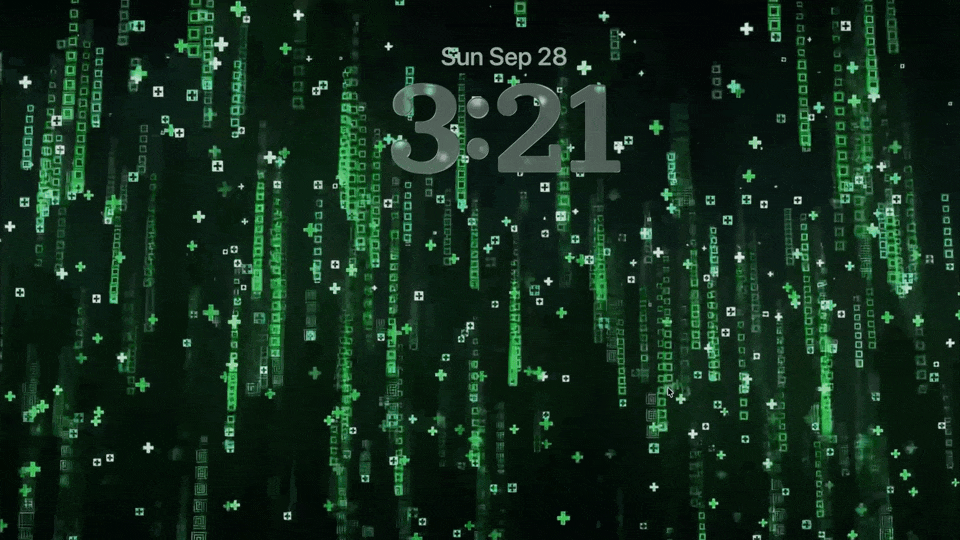
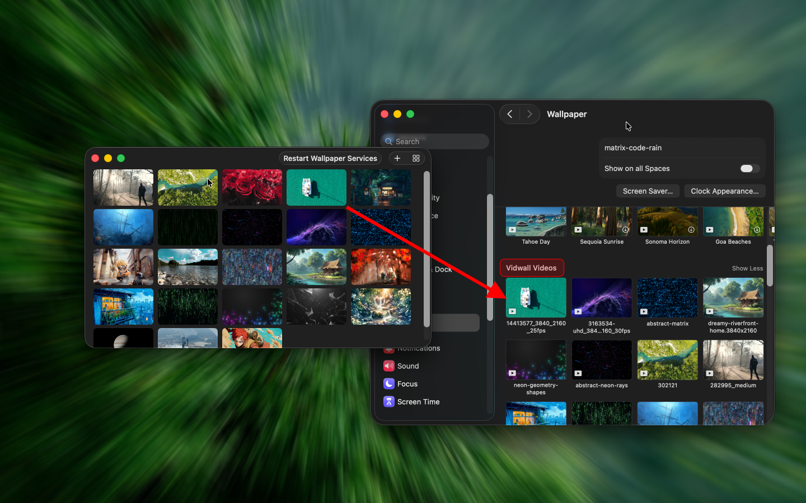

Vidwall Hub 是一款可以轻松将视频（mp4、mov）导入系统壁纸服务，并在 系统设置 中用作锁屏动画的工具。
在尝试通过 Vidwall 应用同时实现动态壁纸和动态锁屏功能时，由于 macOS 沙盒限制，这一功能无法实现。因此，我将测试后的代码独立成一个新应用 免费提供给大家使用，作为 Vidwall 的补充。即使独立运行、绕过沙盒限制，仍无法直接设置动态锁屏，因为 macOS 并未提供相关 API。Vidwall Hub 仅将视频导入系统壁纸服务，用户需要在系统设置的壁纸选项中完成最终应用。
URL Scheme
Vidwall Hub 支持通过 URL 激活工具，并根据 URL 中的视频文件路径参数自动导入视频。
vidwallhub://open?file=/file/to/path/video.mp4